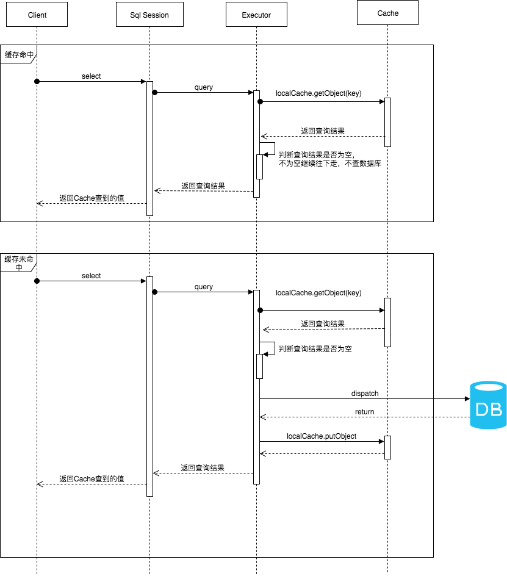
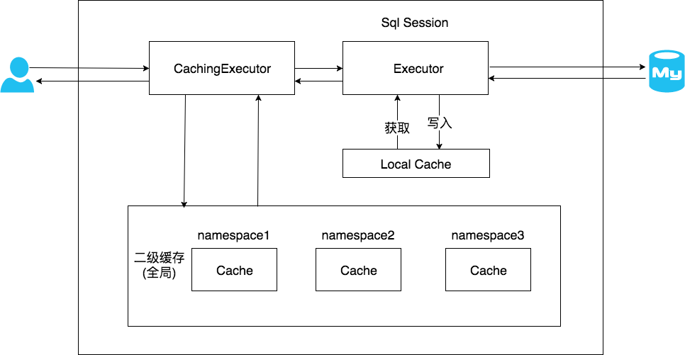

一级缓存
一级缓存介绍
Mybatis 默认开启一级缓存。一级缓存是 SqlSession 级别的缓存，每个 SqlSession 持有一个 Executor，每个 Executor 中有一个 LocalCache。当发起查询时，MyBatis 根据当前执行的语句生成 MappedStatement，在 Local Cache 进行查询，如果缓存命中的话，直接返回结果给，如果缓存没有命中的话，查询数据库，结果写入 Local Cache，最后返回结果。
- SqlSession： 对外提供了用户和数据库之间交互需要的所有方法，隐藏了底层的细节
- Executor： SqlSession 向用户提供操作数据库的方法，但和数据库操作有关的职责都会委托给 Executor
- Cache： MyBatis 中的 Cache 接口，提供了和缓存相关的最基本的操作

一级缓存流程
首先初始化 SqlSession，在初始化 SqlSesion 时，会创建一个全新的 Executor。
SqlSession 创建完毕后，根据 Statment 的不同类型，会进入 SqlSession 的不同方法中，如果是 Select 语句，会执行 SqlSession 的 selectList 方法。SqlSession 把具体的查询职责委托给了 Executor。如果只开启了一级缓存的话，首先会进入 Executor 的 query 方法。
Executor 的 query 方法根据 CacheKey 在 LocalCache 的 HashMap 中查询数据。如果查不到的话，就从数据库查，并对 localcache 进行写入。在 query 方法执行的最后，会判断一级缓存级别是否是 STATEMENT 级别，如果是的话，就清空缓存，这也就是 STATEMENT 级别的一级缓存无法共享 LocalCache 的原因。
CacheKey 由 MappedStatement 的 Id、SQL 的 offset、SQL 的 limit、SQL 本身以及 SQL 中的参数构成。如果五个值相同，即可以认为是相同的 SQL。
SqlSession 的 insert 方法和 delete 方法，都会统一走 update 的流程，update 方法也是委托给了 Executor 执行，每次执行 update 前都会清空 LocalCache。

一级缓存配置
MyBatis 的一级缓存最大范围是 SqlSession 内部，有多个 SqlSession 或者分布式的环境下，数据库写操作会引起脏数据，建议设定缓存级别为 Statement。
1 | mybatis: |
有多个 SqlSession 或者分布式的环境下，数据库写操作会引起脏数据，建议设定缓存级别为 Statement。
二级缓存
二级缓存介绍
一级缓存中，其最大的共享范围就是一个 SqlSession 内部，如果多个 SqlSession 之间需要共享缓存，则需要使用到二级缓存。开启二级缓存后，会使用 CachingExecutor 装饰 Executor，进入一级缓存的查询流程前，先在 CachingExecutor 进行二级缓存的查询。

二级缓存流程
二级缓存在一级缓存处理前，用 CachingExecutor 装饰了 BaseExecutor 的子类，在委托具体职责给 delegate 之前，实现了二级缓存的查询和写入功能。
MyBatis 的 CachingExecutor 持有一个 TransactionalCacheManager(缓存管理器)，TransactionalCacheManager 中持有一个 transactionalCaches 的 Map。
这个 Map 保存了 Cache 和用 TransactionalCache 包装后的 Cache 的映射关系。
1 | private final Map<Cache, TransactionalCache> transactionalCaches = new HashMap(); |
transactionalCaches 的大小取决于 MappedStatement 的数量。
TransactionalCache 中的clearOnCommit属性为了避免多线程的脏读现象。
TransactionalCache 中的entriesToAddOnCommit属性用于暂存数据
- 修改：会将 TransactionalCache 的
clearOnCommit属性设置为 true, 并将暂存的数据清空，未清空二级缓存。 - 查询：从二级缓存查询数据，最后判断
clearOnCommit为 true 则直接返回 null。 - commit：
clearOnCommit为 true 则清除二级缓存，并将entriesToAddOnCommit中的数据存放到二级缓存中。
二级缓存设置
- 配置文件
1
2
3mybatis:
configuration:
cache-enabled: true // 默认为 true - Mapper 文件
cache 标签用于声明这个 namespace 使用二级缓存, 或者在 Mapper 接口类上添加@CacheNamespace注解cache-ref 代表引用别的命名空间的 Cache 配置，两个命名空间的操作使用的是同一个 Cache，多表查询时使用。或者在 Mapper 接口类上添加1
<cache/>
@CacheNamespaceRef(StudentMapper.class)注解1
<cache-ref namespace="mapper.StudentMapper"/>
- SELECT 语句
最后在 SELECT 标签上添加useCache="true"属性